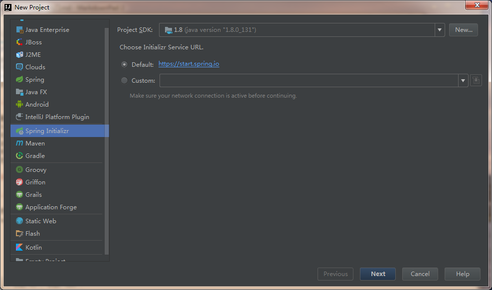
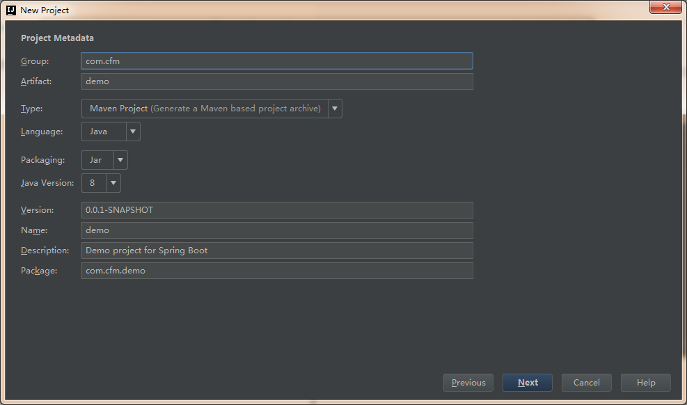
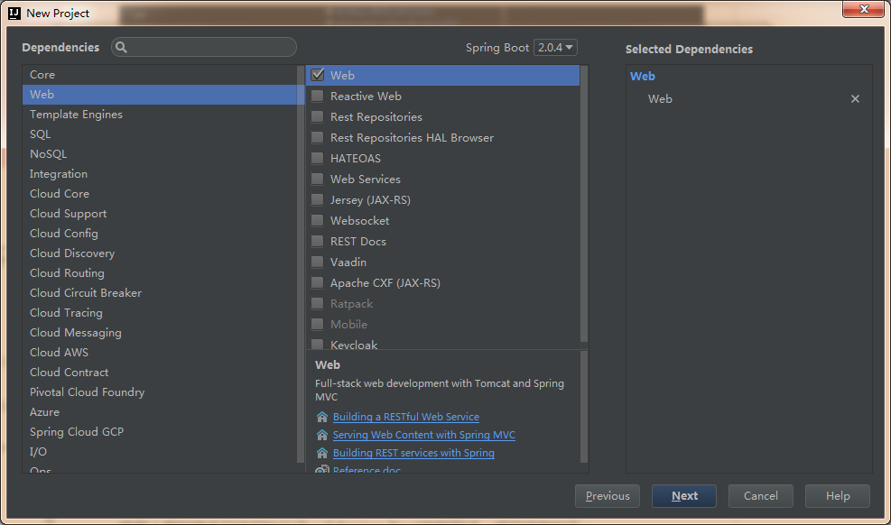
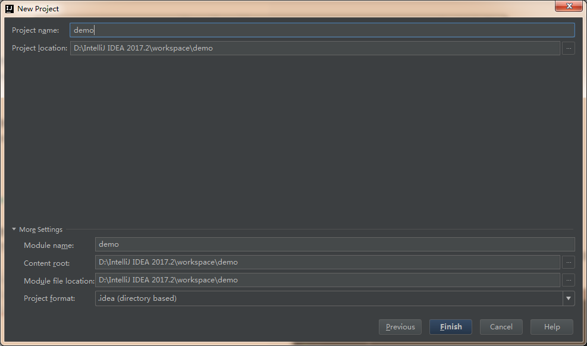
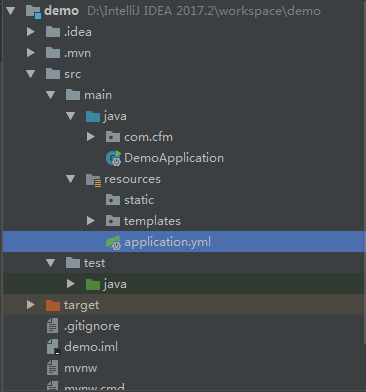
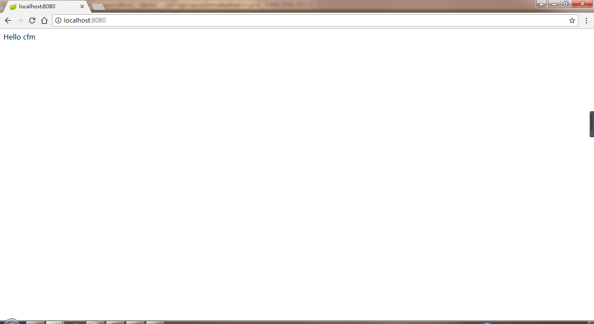

SpringBoot 学习历程 ： helloWorld
1. 了解SpringBoot
1.1 简介
springBoot是简化spring开发的过程， 更加敏捷开发spring应用程序，专注于应用程序的功能， 简化了配置的过程， 甚至不配置。可以通过内嵌Servlet容器（Tomcat/Jetty或Undertow）把web应用程序变成可自执行的JAR文件， 不用部署到传统的容器就能命令行里运行。
1.2 特点
- 创建独立的Spring应用程序
- 嵌入的Tomcat，无需部署WAR文件
- 简化Maven配置
- 自动配置Spring
- 提供生产就绪型功能，如指标，健康检查和外部配置
- 绝对没有代码生成并且对XML也没有配置要求
2. 环境搭建
2.1 项目初始化
这里使用IntelliJ IDEA创建一个Spring Initializr项目（一个web应用程序，能生成Spring Boot结构），步骤如下




创建完成后，查看pom.xml并添加缺少的依赖
<?xml version="1.0" encoding="UTF-8"?>
<project xmlns="http://maven.apache.org/POM/4.0.0" xmlns:xsi="http://www.w3.org/2001/XMLSchema-instance"
xsi:schemaLocation="http://maven.apache.org/POM/4.0.0 http://maven.apache.org/xsd/maven-4.0.0.xsd">
<modelVersion>4.0.0</modelVersion>
<groupId>com.cfm</groupId>
<artifactId>demo</artifactId>
<version>0.0.1-SNAPSHOT</version>
<packaging>jar</packaging>
<name>demo</name>
<description>Demo project for Spring Boot</description>
<parent>
<groupId>org.springframework.boot</groupId>
<artifactId>spring-boot-starter-parent</artifactId>
<version>2.0.4.RELEASE</version>
<relativePath/> <!-- lookup parent from repository -->
</parent>
<properties>
<project.build.sourceEncoding>UTF-8</project.build.sourceEncoding>
<project.reporting.outputEncoding>UTF-8</project.reporting.outputEncoding>
<java.version>1.8</java.version>
</properties>
<dependencies>
<dependency>
<groupId>org.springframework.boot</groupId>
<artifactId>spring-boot-starter-web</artifactId>
</dependency>
<dependency>
<groupId>org.springframework.boot</groupId>
<artifactId>spring-boot-starter-test</artifactId>
<scope>test</scope>
</dependency>
<dependency>
<groupId>org.springframework.boot</groupId>
<artifactId>spring-boot-starter-data-jpa</artifactId>
</dependency>
</dependencies>
<build>
<plugins>
<plugin>
<groupId>org.springframework.boot</groupId>
<artifactId>spring-boot-maven-plugin</artifactId>
</plugin>
</plugins>
</build>
</project>
resources下的application可以是xml，yml，properties三种格式，这里用的是yml格式。

application.yml文件配置如下：
com:
cfm:
name: cfm //自定义变量
server:
port: 8080
下面是DemoApplication文件：
package com.cfm;
import org.springframework.beans.factory.annotation.Value;
import org.springframework.boot.SpringApplication;
import org.springframework.boot.autoconfigure.SpringBootApplication;
import org.springframework.web.bind.annotation.RequestMapping;
import org.springframework.web.bind.annotation.RestController;
@RestController //等价于@Controller+@ResponseBody的结合，使用这个注解的类里面的方法都以json格式输出。
@SpringBootApplication //Sprnig Boot项目的核心注解，主要目的是开启自动配置.
public class DemoApplication {
@Value("${com.cfm.name}")// 从application找到全局变量com.cfm.name
private String name;
@RequestMapping("/")
public String index(){
return "Hello " + name;
}
public static void main(String[] args) {
SpringApplication.run(DemoApplication.class, args);
}
}
运行DemoApplication：
